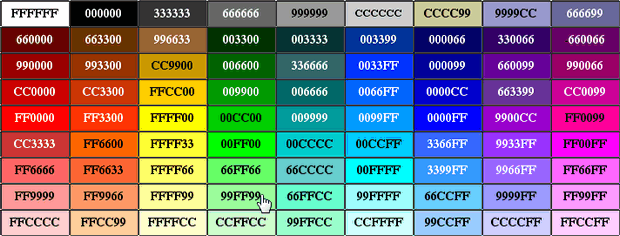
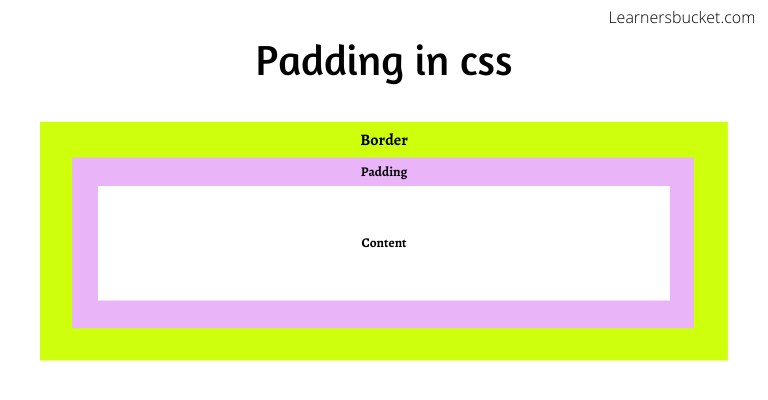
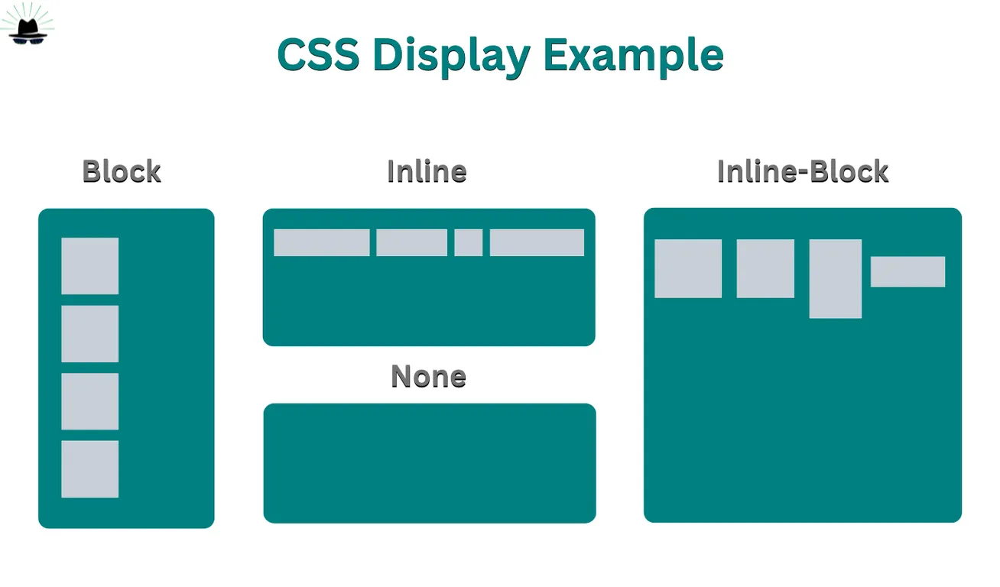
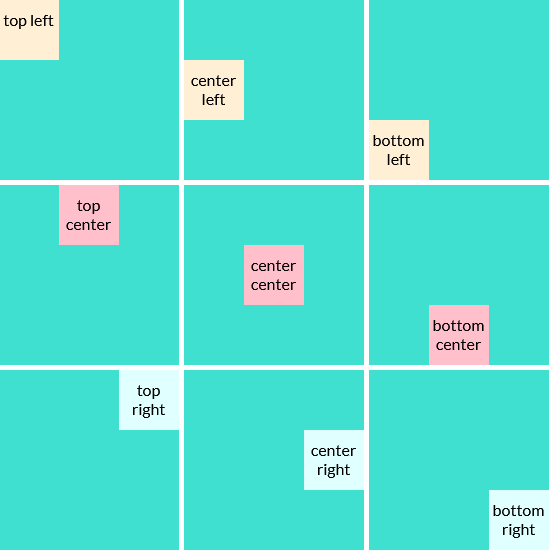
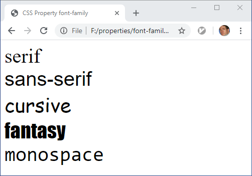
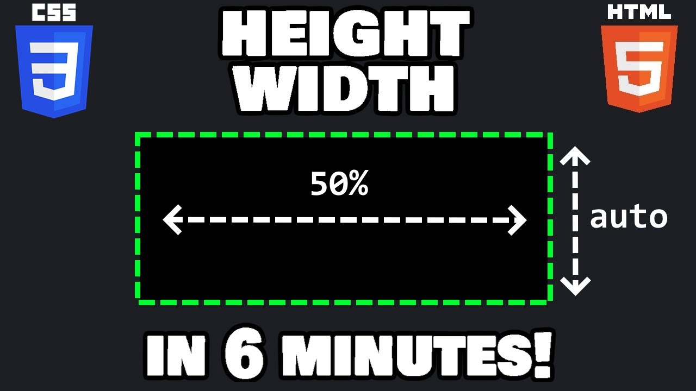

| Nombre de la propiedad |
Sintaxis |
Descripción o uso |
Ejemplo de uso |
Valores comunes |
Imagen |
Enlace |
| color |
color: valor; |
Define el color del texto dentro de un elemento. |
color: red; |
red, blue, #ff0000, rgb(255, 0, 0) |
 |
color |
| background-color |
background-color: valor; |
Establece el color de fondo de un elemento. |
background-color: #f0f0f0; |
#fff, rgba(0, 0, 0, 0.5), transparent |
 |
background-color |
| margin |
margin: valor; |
Define el espacio exterior (margen) alrededor de un elemento. |
margin: 20px; |
10px, 1em, auto |
 |
margin |
| padding |
padding: valor; |
Define el espacio interior (relleno) dentro de un elemento. |
padding: 15px; |
5px, 1rem, 2em |
 |
padding |
| font-size |
font-size: valor; |
Controla el tamaño de la fuente del texto. |
font-size: 18px; |
12px, 16px, 2em, 1rem |
 |
font-size |
| display |
display: valor; |
Controla cómo se comporta un elemento en el flujo del documento. |
display: flex; |
block, inline, flex, grid |
 |
display |
| border |
border: valor; |
Añade un borde alrededor de un elemento. |
border: 2px solid black; |
1px solid, 2px dashed, none |
 |
border |
| text-align |
text-align: valor; |
Define la alineación horizontal del texto dentro de un elemento. |
text-align: center; |
left, right, center, justify |
 |
text-align |
| font-family |
font-family: valor; |
Define la fuente o tipografía a utilizar en el texto de un elemento. |
font-family: Arial, sans-serif; |
'Arial', 'Verdana', 'Times New Roman' |
 |
font-family |
| width |
width: valor; |
Define el ancho de un elemento. |
width: 100%; |
100px, 50%, auto |
 |
width |